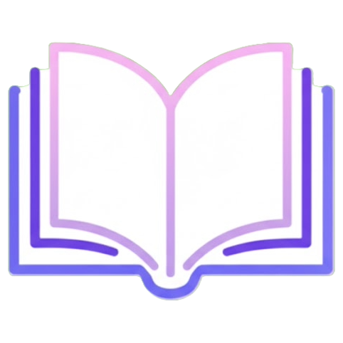

- Mô hình “GREAT” được hình thành trên 5 tiêu chí bao gồm: Guidance (Hướng dẫn), Responsibility (Trách nhiệm), Ethics (Đạo đức), Autonomy (Tự chủ), Transparency (Minh bạch)
- Guidance (Hướng dẫn): Giáo viên sẽ chủ động hướng dẫn cho học sinh cách sử dụng AI cho các mục đích học tập. Ngoài ra, giáo viên hỗ trợ hình thành thói quen tư duy trước khi sử dụng AI nhằm giảm thiểu sự lệ thuộc của AI
- Responsibility (Trách nhiệm): Từ hành vi và tâm lí lệ thuộc vào AI, vào những thứ có sẵn, nhóm tác giả mong muốn đề xuất 1 số giải pháp giúp học sinh cải thiện vấn đề lệ thuộc và có trách nhiệm hơn khi sử dụng AI, học sinh phải là người chủ động sử dụng AI 1 cách thông minh và quyết đoán hơn
- Ethics (Đạo đức): Học sinh không được phép sử dụng AI cho các mục đích sáng tạo nội dung mang tính nhạy cảm, xúc phạm bất kỳ cá nhân, tổ chức nào khác, không được sử dụng AI cho các mục đích không phù hợp như đạo văn, sử dụng chất xám của người khác và biến điều đó thành của mình nhằm trục lợi.
- Autonomy (Tự chủ): Chủ động luôn là một trạng thái tích cực. Rèn luyện sự tự chủ sẽ tạo cho học sinh sự chủ động khi học tập. Khi học sinh rèn được sự tự chủ, học sinh có thể dễ dàng tìm kiếm thông tin, đưa ra các lời giải nhằm giải quyết vấn đề một cách dễ dàng, hiệu quả.
- Transparency (Minh bạch): Hiện nay, theo Luật sở hữu trí tuệ, các hành vi ăn cắp ý tưởng, sao chép, đạo nhái, sử dụng các trích dẫn không rõ ràng chưa được công nhận là hành vi vi phạm tính minh bạch. Nhưng đối với việc sử dụng AI để tham khảo tài liệu, học sinh nên có các phương pháp chọn lọc hiệu quả để không dính vào những vấn đề không đáng có.
Quy tắc: HỌC
Hãy là người sử dụng AI thông minh
Hãy nhớ: “Tư duy trước, AI sau”
Hãy là người sử dụng AI cho mục đích chính đáng
Hãy sử dụng AI một
cách minh một cách minh bạch
Hãy để AI là công cụ tối ưu hóa khả
năng của con người
Không sử dụng thông tin từ AI khi chưa kiểm tra chéo
Không sử dụng
AI cho mục đích sao chép, gian lận, sử dụng chất xám trái phép
nhằm trục lợi
Không sử dụng AI cho mục đích cắt ghép không chính
đáng
Không sử dụng AI cho mục đích xâm phạm thông tin cá nhân
Không lệ thuộc vào AI
Có trách nhiệm khi sử dụng AI
Có nhận thức rõ ràng về tính đúng
sai khi sử dụng AI
Có quy trình rõ ràng khi sử dụng AI trong học
tập
Có sự hướng dẫn từ thầy cô và gia đình khi sử dụng AI
Có sự
tự chủ khi sử dụng AI